Префектура Кумамото · город Кумамото · бар
Бар Yakoboku в Кумамото: классические коктейли на сётю, красном сакэ и местном вине
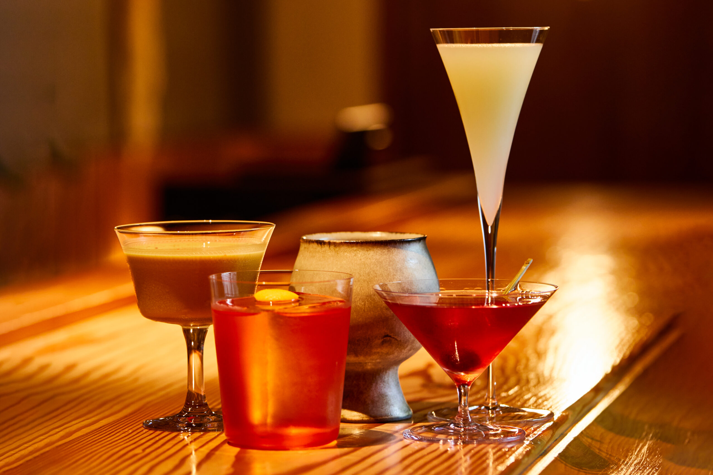
В центре Кумамото есть бар, ради которого стоит ехать в город. Его хозяин говорит, что подаёт вкус, который можно попробовать только здесь, и каждый коктейль в меню это подтверждает.
Бармен
Синъя Коба: из Кумамото в мир и обратно
В июле 2023 года бар Yakoboku из города Кумамото занял 84-е место в рейтинге Asia's 50 Best Bars. Для Кюсю это было впервые, и о маленьком баре заговорили за границей. За стойкой стоит его хозяин Синъя Коба, один из самых известных барменов Японии. В 2021 году он стал чемпионом Diageo World Class, одного из крупнейших конкурсов коктейлей в мире, и выступал в мировом финале.
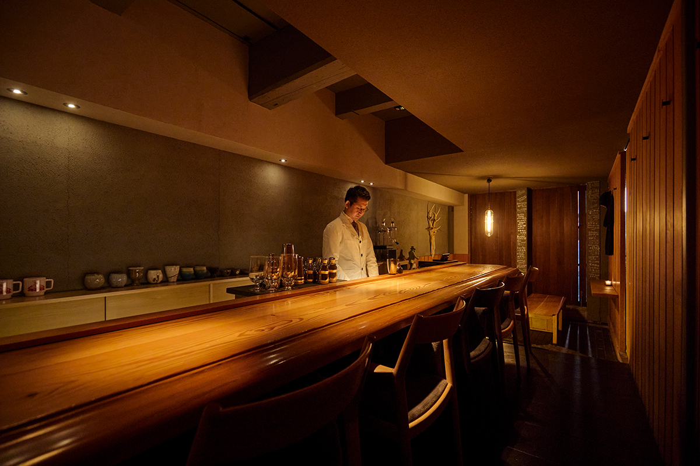
Бар открылся в январе 2020 года на первом этаже японского дома, которому около 150 лет. Когда-то здесь была гостиница. Вход спрятан: дверь выглядит как деревянная стена, и тот, кто пришёл впервые, порой не замечает, что её можно сдвинуть. За ней тихий тёмный зал.
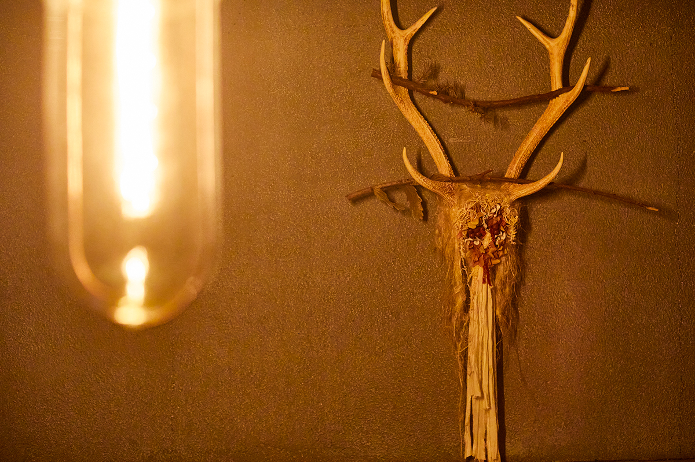
Первое, что удивляет: здесь не берут плату за место, хотя в японских барах она привычна.
«За границей такого понятия нет. Мне и самому всегда было немного странно платить только за то, что сел. А главное, гостям из других стран не стоит навязывать то, что принято в Японии»
Синъя Коба
Меню
Шестнадцать коктейлей по одной цене
Классических рецептов в меню нет. Все 16 коктейлей авторские, включая безалкогольные. Цена у всех одна: в 2024 году коктейль стоил 1600 иен, безалкогольный 1400 иен. Так цена не мешает выбирать.
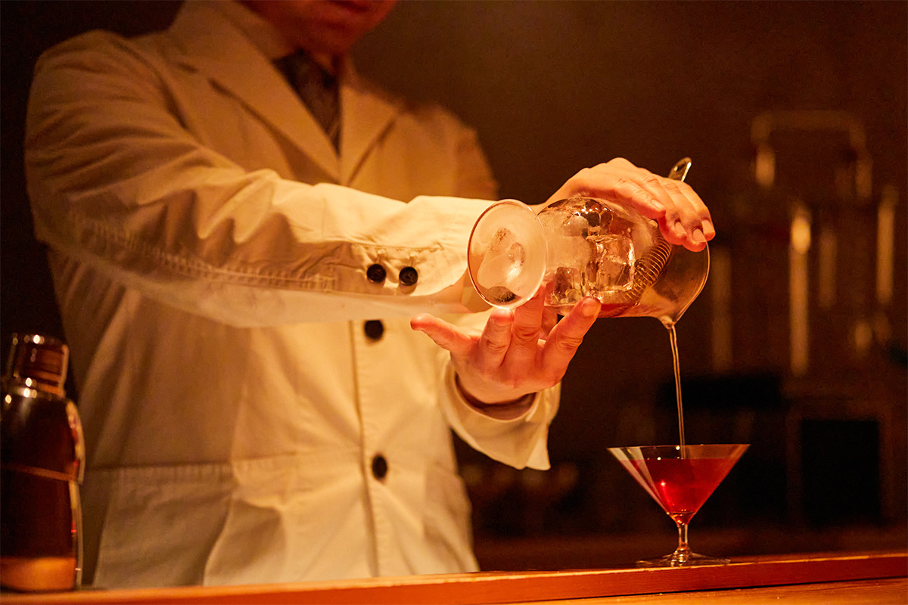
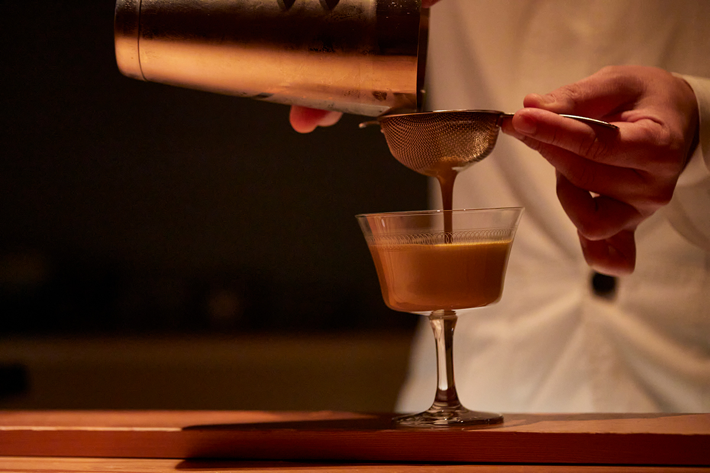
Коба хочет, чтобы в бар без робости заходили и молодые люди, которые в барах обычно не бывают. Но вечер здесь всё равно должен стать чем-то особенным.
«Хочу, чтобы в первый же глоток человек удивился»
Синъя Коба
Почти все коктейли устроены одинаково: Коба берёт мировую классику, негрони, «Последнее слово», манхэттен, и меняет основу на напиток из Кумамото. Вместо джина у него рисовый сётю, вместо вермута красное сакэ со специями. Получается знакомый коктейль с вкусом, которого гость ещё не пробовал. Секрет, по словам хозяина, в долгой подготовке. Состав меняется в зависимости от сезона.
Коктейли
Пять бокалов из Кумамото
«Якобоку»
Коктейль, давший имя бару, повторяет аромат ночного цветка якобоку. Обычно его готовят на джине. Для этого коктейля марка SHOCHU X вместе с винокурней Rokuchoshi из района Кума выпустила рисовый сётю NAGOMI, и на его основе сделали бутилированную версию. В конце 2023 года её собирались начать продавать на сайте SHOCHU X.
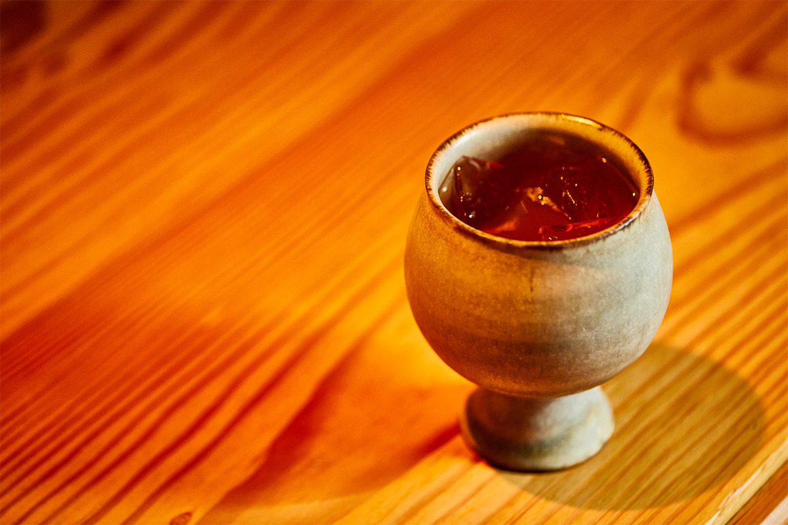
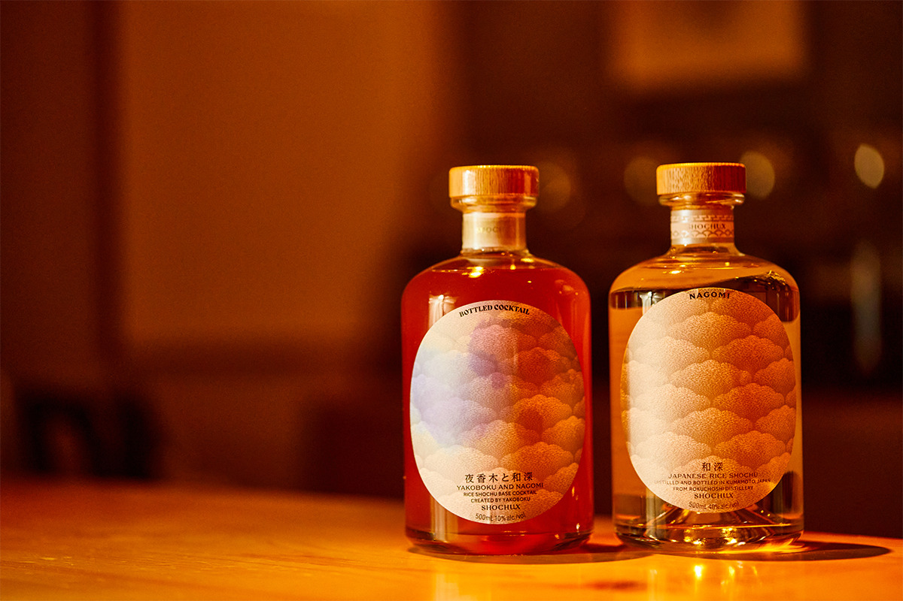
«Последнее слово»
Известный во всём мире коктейль на джине здесь делают на кума-сётю «Муся-гаэси» и слегка кисло-сладком мутном сакэ «Сануки Клауди». Сакэ дополнительно настаивают на сакэ-касу, рисовой гуще, чтобы добавить аромата и сладости.
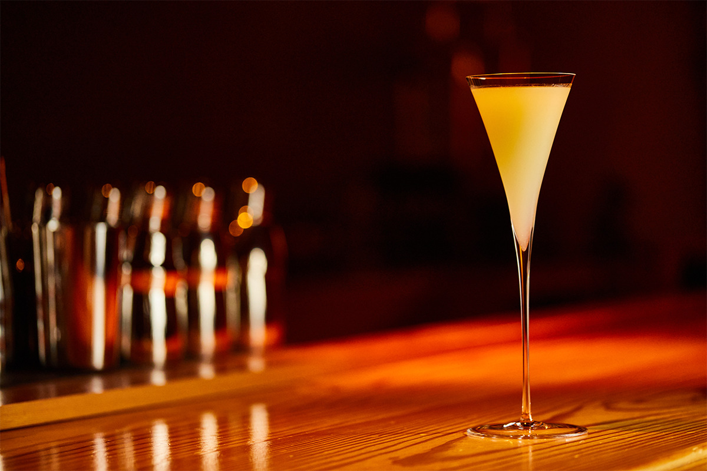
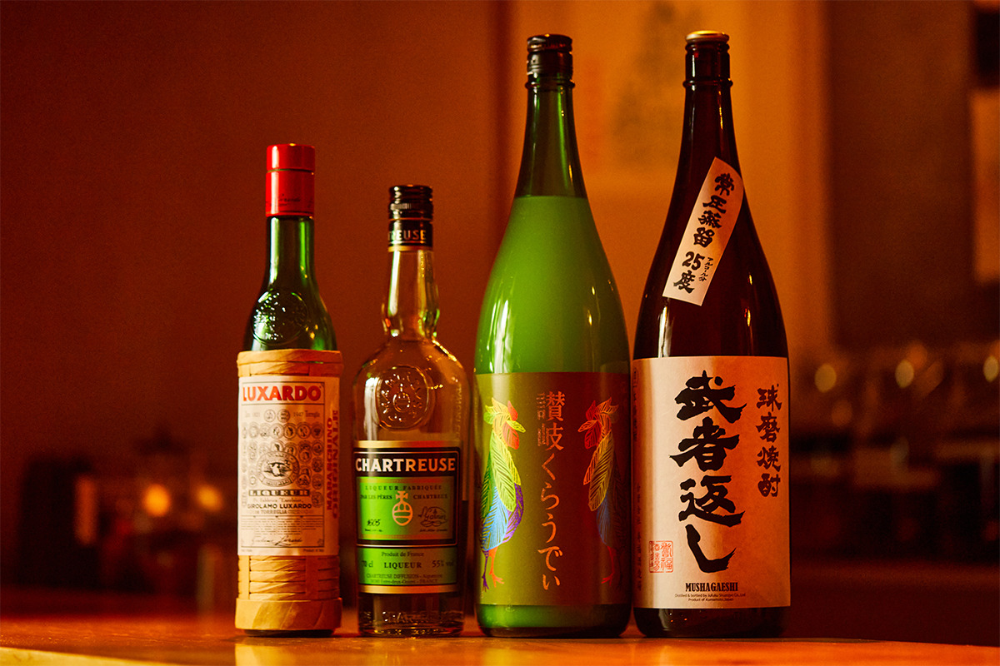
Негрони
В Кумамото на Новый год пьют отосо, праздничный напиток, и для него берут акадзакэ, местное красное сакэ. Из этого обычая и вырос негрони Кобы. Акадзакэ он настаивает на специях и превращает в подобие вермута. Вместо джина здесь лёгкий рисовый сётю «Кавабэ».
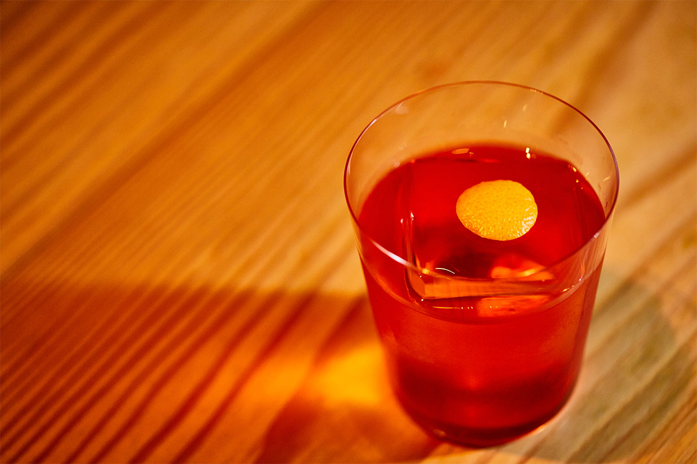
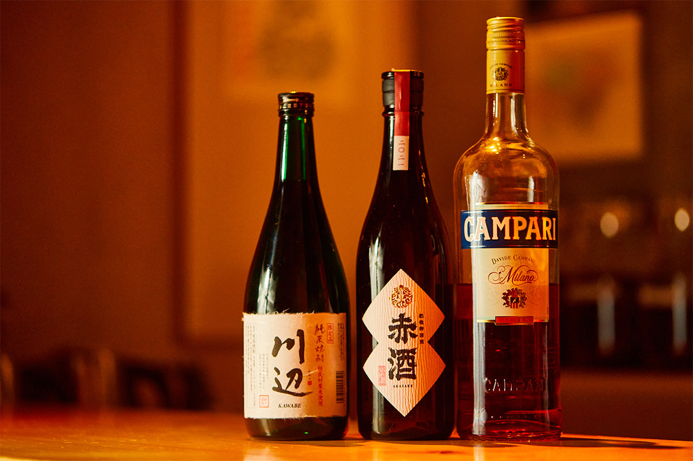
BENI
Свой манхэттен Коба придумал, когда стал амбассадором бурбона Buffalo Trace. Вкус держится на домашнем вермуте из смеси двух вин компании Kumamoto Wine.
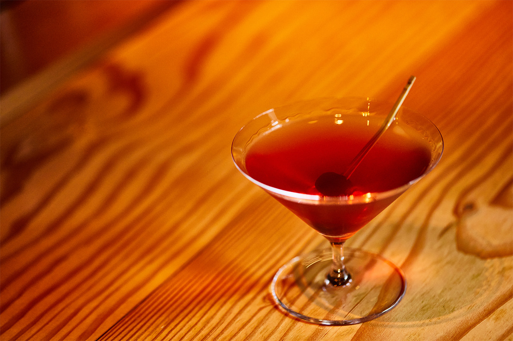
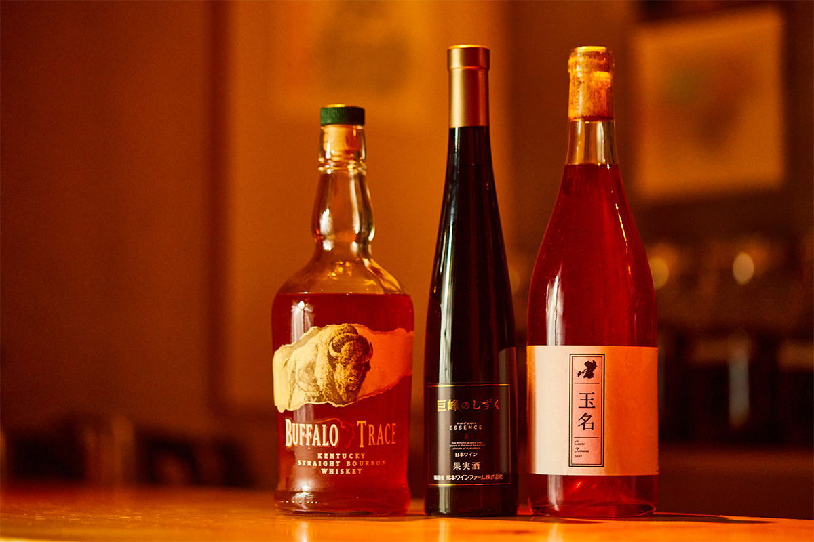
«Эспрессо и фисташка»
Основа здесь кума-сётю «Оиси», чистый рисовый сётю без резкого привкуса, и всё же поверить, что коктейль сделан на сётю, трудно. Сверху его посыпают дроблёными какао-бобами и розовым перцем: они хрустят и дают аромат.
«Хочу, чтобы его попробовали и те, кто сётю не любит»
Синъя Коба
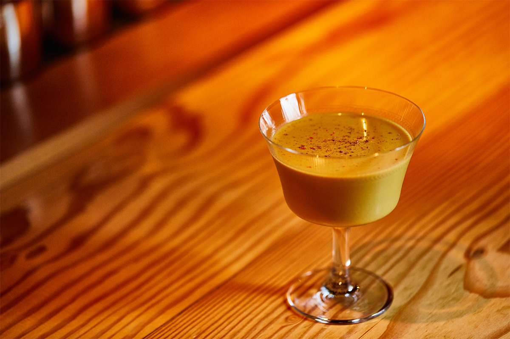
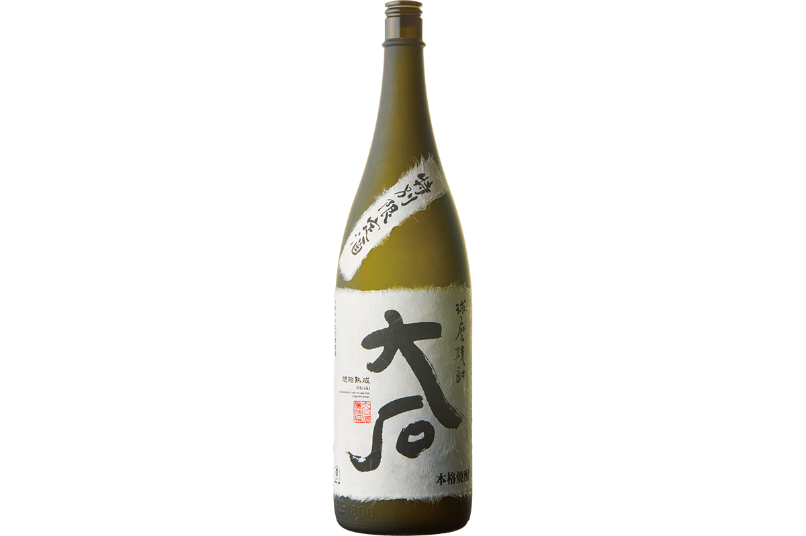
Имя
Цветок, который пахнет ночью
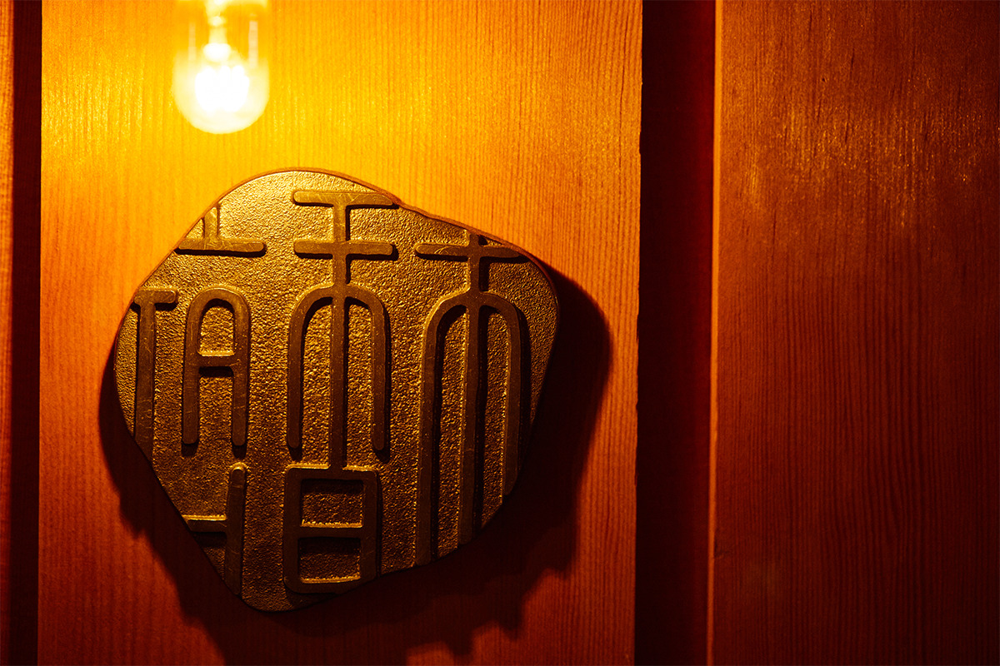
Выходные в баре не фиксированы, но он открыт почти каждый день. На втором этаже того же дома работает японский ресторан Ruri-AN, он принадлежит той же компании.
Yakoboku
- Адрес
- префектура Кумамото, город Кумамото, район Тюо, Минамицубои-мати, 5-21, 1-й этаж
- Телефон
- +81 90-8408-5211
- Часы работы
- 18:00–24:30 (последний заказ в 24:00)
- Выходные
- нерегулярно
- Цены / Вход
- без платы за место, коктейли от 1400 иен
Фото: Косаку Китадзима.